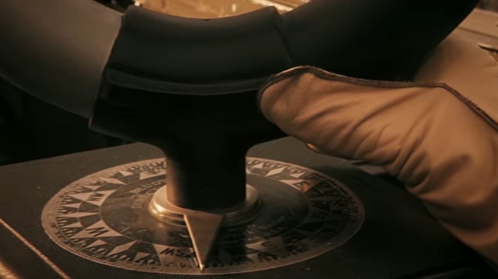
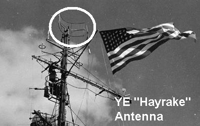
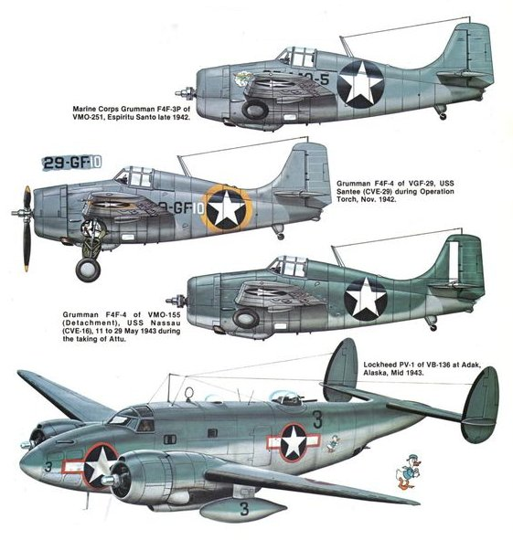
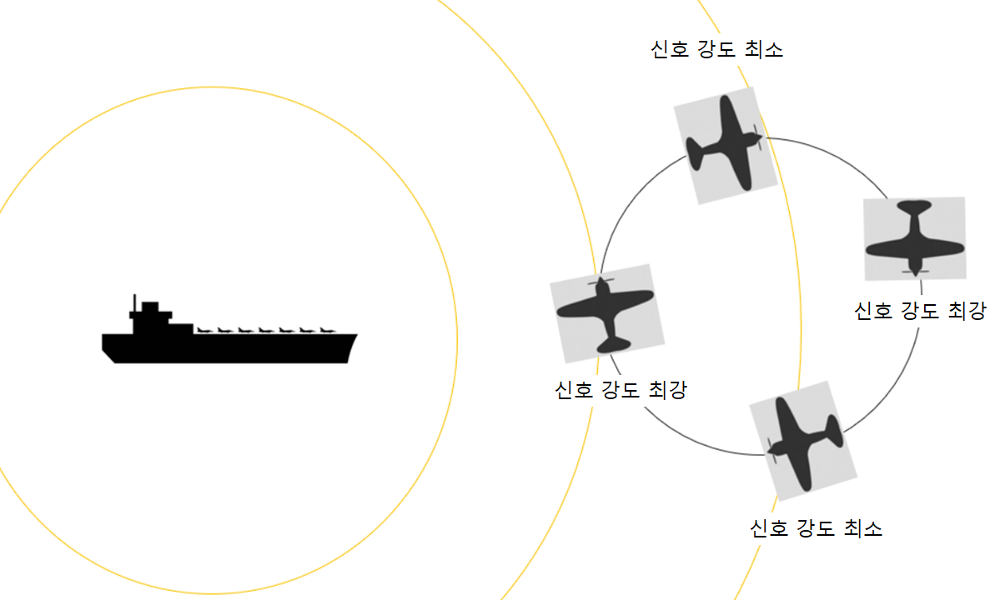
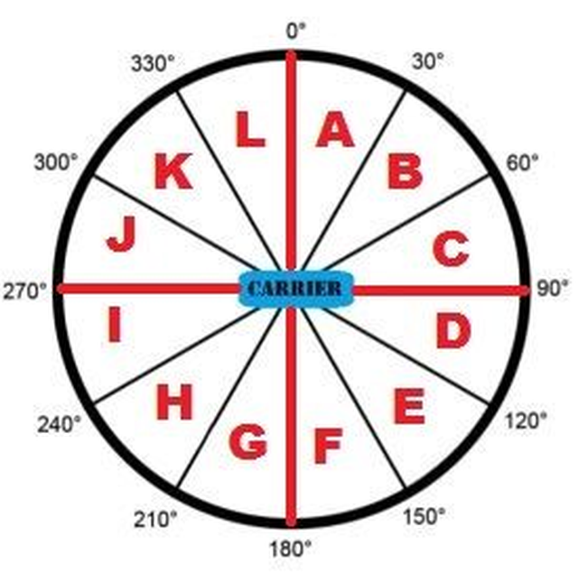
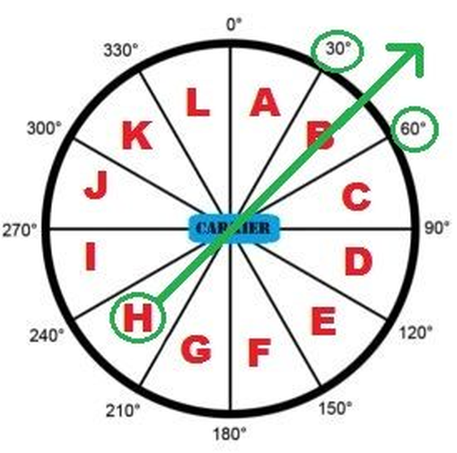

항공모함은 대체 어디에 ? (1) - 영화 '생존자들'의 재미있는 기술적 배경
게시: 2020-09-10T06:30:04+09:00
경부 고속도로를 타고 차를 몰다 보면 머리 위로 미군 헬리콥터가 경부 고속도로를 따라 날아다니는 모습을 흔히 볼 수 있습니다. 맞는 이야기인지 모르겠으나, 제가 알기로는 미군 헬리콥터가 경부 고속도로 인근으로 비행하는 이유는 그렇게 하면 길을 찾기 쉬우니까 그냥 그 도로를 따라 가는 거라고 합니다. 보통 전투기나 수송기 같은 고정익 항공기 조종사들이 헬리콥터 조종사들을 약간 무시하는 경향이 있는데, 그 이유 중 하나가 헬리콥터는 주로 낮에 저공으로 비행하기 때문에 그냥 지도를 보고 가면 되므로 항법 공부를 할 필요가 사실 없는 것도 이유 중 하나라고 들었습니다. 다시 강조하지만 그냥 누가 하는 소리를 들은 것 뿐이고 실제로는 어떤지 모르겠습니다. 헬리콥터 중에도 각종 복잡한 항법 장치를 갖추고 야간 비행이나 해상 비행을 하는 경우가 많습니다. 또 요즘은 워낙 전자 항법 장치가 발달했으니 고정익 항공기 조종사들도 옛날뱃사람처럼 별이나 태양에 육분의를 들이대고 현재 위치를 찾는 일은 거의 없겠지요. 저는 예전부터 대체 제2차 세계대전 당시의 폭격기나 함재기 조종사들은 어떻게 길을 찾는지가 궁금했습니다. 특히 함재기 같은 경우는 아예 망망대해에서, 고정된 공항도 아니고 30노트의 속력으로 움직이는 항공모함을 어떻게 찾아 돌아오는지 정말 궁금했습니다. 그런 정보도 인터넷에 다 나오긴 합니다만 귀찮기도 하고 혹시 수학이라고 나오면 어떻게 하나 (참고로 저는 이과 출신...) 겁이 나서 안 찾아봤지요.
(해리 포터의 말포이가 폭격수로 나오는 영화 '생존자들' (Against the Sun) 입니다. 말포이도 머글 세상 사는 것이 많이 힘들었는지 벌써 많이 늙었더군요.) 그러나 지난 주에 TV에서 영화 한편을 봤습니다. 2015년 영화 'Against the Sun' (국내명 '생존자들')은 1942년 산호해 해전 몇 달 전 당시 뇌격기를 타고 대잠 초계 임무 수행후 USS Enterprise로 귀환하다 바다 위에서 길을 잃는 바람에 연료가 소진되어 남태평양에 불시착한 3명의 미해군 이야기입니다. 이 영화는 실화에 바탕을 둔 것인데, 이들은 물도 식량도 없이 고무보트를 타고 무려 34일간 1600km를 표류하여 푸카푸카 섬에 도착하여 결국 구조됩니다. 영화 첫부분을 보면, 이제 막 해가 저물기 시작하는 망망대해 위에서 3인승 함재 뇌격기인 Devastator 속에서의 장면이 나오는데, 매우 인상적입니다. 맨 앞에 당시 41세의 조종사인 딕슨(Harold Dixon) 상사가 앉고, 그 뒤에는 폭격수(bombardier)가 앉고, 맨 뒷자리에 후방 기총수이자 무전병이 앉습니다. 여기서 이 세 사람의 대화 및 하는 행동들을 보십시요.

(이 영화에 나오는 Douglas TBD Devastator 뇌격기입니다. 1937년에 미해군에 도입되었는데, 태평양 전쟁 발발 직후인 1942년에 퇴역되었습니다. 그만큼 성능이 형편없었다는 이야기지요.) ------------------------- 무전병: 기장님(Chief), 앨드리치입니다. 어, 헤이레이크에서 점점 멀어지는데요. (Uh, I'm losing her on the Hayrake.) (혼잣말로) 아 이런, 우리 지금 어디로 가는 거지? 비콘 신호가 완전히 끊겼습니다. 오버. 우리 근처에 온 건가요, 기장님? 폭격수: (무전병에게) 조종석을 두들겨 볼게. 어쩌면 인터폰이 끊겼나봐. (Maybe his comm is down.) (앞좌석을 두들기며) 기장님 ? 우리 말 들립니까, 오버?

(폭격수와 무전병 사이에 있는 둥근 것이 hayrake 수신 안테나입니다. 저걸 빙빙 돌려가며 각도를 재더군요. 저것도 19세기말 헤르츠(Hertz) 박사님이 발견하신 것입니다.)
------------------------- 일단 여기서 저 헤이레이크(hayrake, 건초 긁어모으는 갈퀴)라는 것은 대체 뭘까요 ? 항모를 찾아가는 것과 뭔가 상관 있는 것 같은데 말입니다. 이건 당시 미해군 항모에 장착했던 함재기 유도 전파 송신 장치입니다. 정식 명칭은 YE-ZB 'Hayrake' system이었는데, 여기서 YE는 항모의 송신기를 뜻하는 식별명이고, ZB는 함재기의 수신기 식별명입니다. Hayrake는 그냥 송신 안테나가 갈퀴 모양으로 생겼다고 해서 붙여진 별명입니다.

저 레이더처럼 생긴 안테나는 대략 분당 2 바퀴 정도의 느린 속도로 회전하면서 사방에 전파 신호를 쏩니다. 이 전파 신호는 약 275 해리 (약 509km)까지 잡힙니다. 당시 Devastator 뇌격기가 Mark13 어뢰를 달면 약 700km 정도를 날 수 있었으니까 전투 반경은 대략 300km 안쪽이었을 것입니다. 그러니 그 정도 거리면 충분했지요. 그 거리 안에 있다면 모함에서 보내오는 전파 신호를 약 30초당 1번씩 받게 됩니다. 전파의 발신원 방향을 찾는 방법은 의외로 역사가 거의 전파의 발견 그 자체와 같습니다. 전파의 존재를 실험으로 입증한 하인리히 헤르츠(Heinrich Hertz)가 루프형 안테나를 이리저리 방향을 바꿔가며 테스트 해보니, 루프 안테나의 평면을 발신 방향으로 향하게 할 때 가장 수신 감도가 셌고 루프 안테나를 모서리 방향으로 세울 때 감도가 거의 없었습니다. 이 현상을 이용하여 비지향성 비컨(non-directional beacon) 신호 시절에도 전파가 어느 방향에서 오는지 찾을 수 있었습니다. 다만 그런 최기의 저주파, 즉 장파(long wave)의 방향을 찾기 위해서는 안테나의 길이가 길어야 했으므로 지상에서는 쉽지 않았습니다. 하지만 선박이나 항공기에서는 이야기가 좀 달랐습니다. 긴 와이어 안테나를 기체 앞뒤 방향으로 매단 뒤, 한바퀴 선회하면 최소한 방향은 찾을 수 있었으니까요. 그러나 이런 방식은 그다지 정확하지도 않았고, 게다가 적기도 똑같은 방법으로 미해군 항모가 어디에 있는지 알아낼 수 있었으므로 실제 전시 상황에서는 쓸 수가 없는 방식이었습니다.

(항공기에 매인 저 와이어는 안테나인데, DF sensing antenna, 즉 방향 탐지 안테나로도 쓰였습니다. 기술의 발달로 고주파가 통신에 사용되면서 굳이 저렇게 긴 안테나는 점점 필요가 없어졌습니다.)

(이런 비지향성 비컨 신호를 계속 보내면 아군기는 저렇게 한바퀴 크게 선회하면서 어느 방향에서 신호가 가장 강하게 들리는지를 통해 대략적인 항모 위치를 알게 됩니다. 문제는 적기도 알게 된다는 것입니다.)
그러나 지향성 비컨 신호를 회전하는 안테나를 통해 방출하는 헤이레이크 시스템에서는, 각 회전 방향마다 계속 변화하는 신호를 쏨으로써 이 신호를 통해 적기가 항모를 쉽게 찾을 수 없었습니다. 그런데 이 문제는 아군 함재기에도 동일하게 적용되었습니다. 아군 함재기에 실린 ZB 수신기에서도 30초에 한번씩 신호를 잡히지만 이게 어느 방향에서 온 것인지는 알 수 없었던 것입니다. 그럼 말짱 도루묵 아닌가요 ? 여기서 물리학자들은 해결하지 못한 문제를 머리 좋은 엔지니어들이 고안해냅니다. 먼저 헤이레이크 안테나가 회전하는 구역을 아래와 같이 30도 각도씩 12개로 나누고, 각 구역마다 미리 정해둔 일정한 모스 부호를 송신하는 것입니다. 어느 구역에서 어떤 모스 부호를 보내느냐 하는 것은 각 항공모함마다 달랐고 매일 바뀌는 암구어 같은 것이었습니다. 출격하는 뇌격기 승무원들은 다른 건 다 잊어도 그 날의 구역별 모스 부호는 반드시 암기하고 있어야 했습니다. 여기서는 편의상 알파벳으로 했습니다.

만약 여러분이 항모로부터 남서쪽 방향, 그러니까 그림에서는 H 구역에 있다고 해보시지요. 그러면 들어오는 헤이레이크의 모스 부호가 'H'일테니 직관적으로 항모는 북동쪽 방향에 있다는 것을 알 수 있습니다. 이 시스템은 그렇게 정밀한 방향을 주지는 않습니다만, 날아가다가 혹시 "G"나 "I" 신호가 날아온다면 함재기의 비행 방향이 틀렸으며 어느 쪽으로 틀어야 하는지 알 수 있게 됩니다. 그렇게 날아가다보면 대략 육안으로 항공모함을 확인할 수 있는 거리까지 갈 수 있는 것이지요.

그런데 이 영화에서는 더 이상한 대화도 나옵니다. 위에서 이어지는 대화를 들어보시지요. --------------------------------------- 기장: 아주 잘 들려, 친구들. (Loud and clear, boys.) 그냥 어느 방향으로 바람이 부는지 보려고 기다리고 있었어 (Just waiting for this wind to tell me which direction she wants to blow). 파스툴라 (폭격수), 드리프트 조준경 한번 더 봐주게 (take another drift sight.) 파도를 보니까 방향이 좀 잘못된 것 같아 (That's not how I'm reading those wave tops). 폭격수: 예, 기장님. (뭔가 아래 쪽을 향한 조준경을 들여다보더니) 15도요. 출격할 때와 똑같은 눈금입니다 (Same read as the outbound), 기장님.
기장: 그게 맞다면 우리 항모는 동쪽에 있는 거쟎아 (If that's correct, she's off to the east). 난 서쪽에 있는 줄 알았는데 (I had her west). 동쪽에 있는 것으로 가겠다. (I'm taking her east.)


(대체 뭘 보는 것이고 뭐가 보인다는 거지요??)
---------------------------------------- 여기서 대체 드리프트 조준경(drfit sight)라는 것은 것은 뭐고 망망대해에서 대체 뭘 보라고 하는 것일까요 ? 그리고 파도와 바람 이야기는 무슨 소리일까요 ? 그건 다음주에 또 보시겠습니다.
** 이 영화의 이 초반부 영상은 아래 유튜브에서 보실 수 있습니다.

www.youtube.com/watch?v=-cl9Md6rHfg
Source : www.mission4today.com/index.php?name=Knowledge_Base&file=print&kid=704&page=1